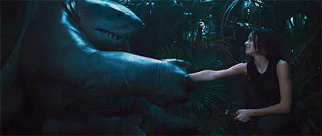
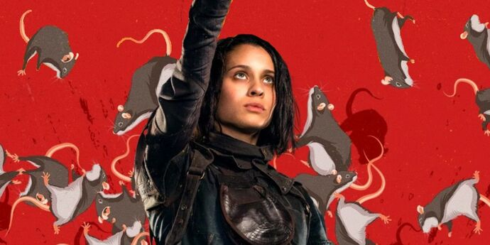
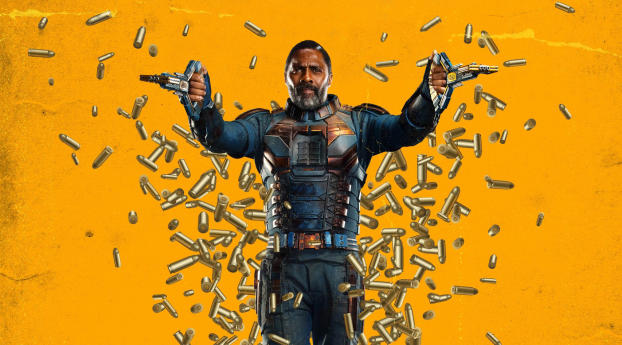
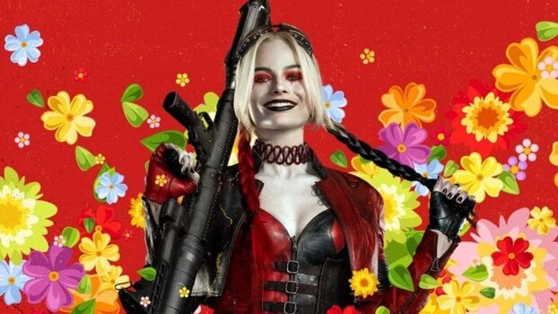
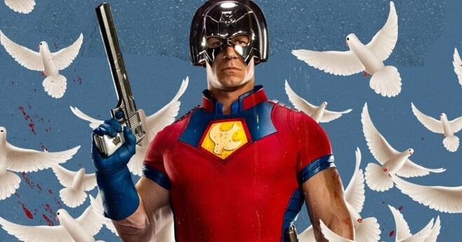
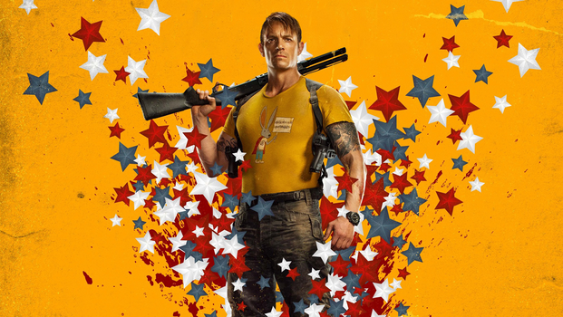
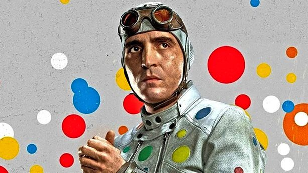

Ao longo do filme, Nanaue passa a se entender com os membros de sua equipe, em especial com a Caça-Ratos II, com quem criou um apego maior.
Interpretada pela atriz portuguesa Daniela Melchior, Cleo Cazo herdou do seu pai a capacidade de controlar e se comunicar com ratos, assumindo o nome de Caça-Ratos II. Cleo possui um rato de estimação chamado Sebastian.
Contratado para matar o Superman com balas de kriptonita, o Sanguinário foi preso e enviado para a Penitenciária Belle Reve até ser contatado por Amanda Waller para fazer parte da Força-Tarefa X. Embora não tenha nenhum superpoder, o Sanguinário é um extraordinário atirador equipado com um traje tático especial e diversas armas.
Reprisando o seu icônico papel, Margot Robbie retorna como Arlequina, dessa vez com um visual um pouco diferente e já considerando a sua emancipação vista em Aves de Rapina. Segundo a própria Robbie, essa é a um versão diferente da personagem que revela alguns novos lados da sua personalidade.
Christopher Smith, ou também conhecido como Pacificador, é um extremista que acredita em alcançar a paz a qualquer custo, não importando quantas pessoas ele vá matar no caminho.
Reprisando o seu papel do filme anterior, Joel Kinnaman mais uma vez vive Rick Flag, um oficial especializado em operações de alto risco que lidera a Força-Tarefa X em uma missão na remota ilha de Corto Maltese.
Abner Krill, ou mais conhecido como Bolinha, é um vilão original das histórias do Batman, que devido a um vírus sofreu uma mutação que o permite criar bolinhas coloridas por todo seu corpo. As bolinhas criadas por Krill possuem propriedades incendiárias.
🐬🐬🐬🐬🐬🐬🐬🐬🐬🐬🐬🐬🐬🐬🐬🐬🐬🐬🐬🐬🐬🐬🐬🐬🐬🐬🐬🐬🐬🐬🐬🐬🐬🐬🐬🐬🐬🐬🐬🐬🐬🐬🐬🐬🐬🐬🐬🐬🐬🐬🐬🐬🐬🐬🐬🐬🐬🐬🐬🐬🐬🐬🐬🐬🐬🐬